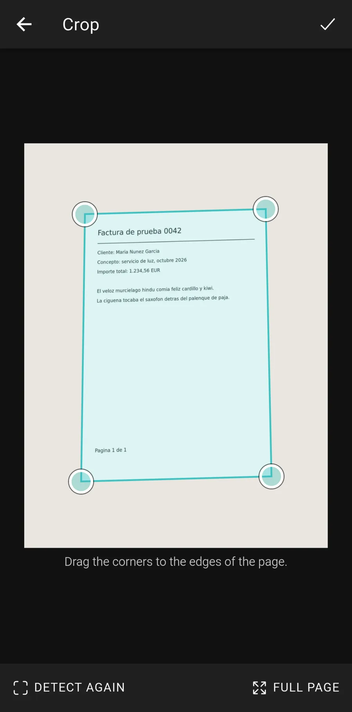
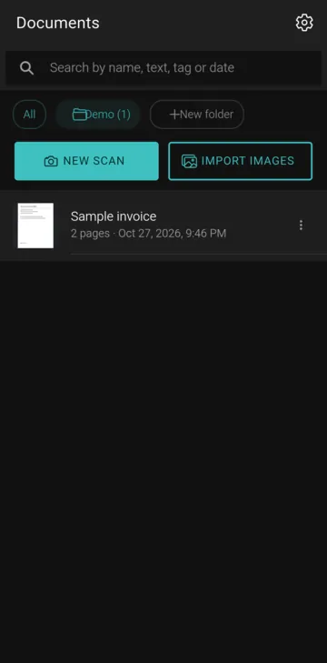
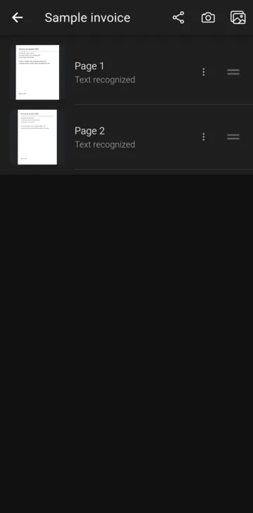
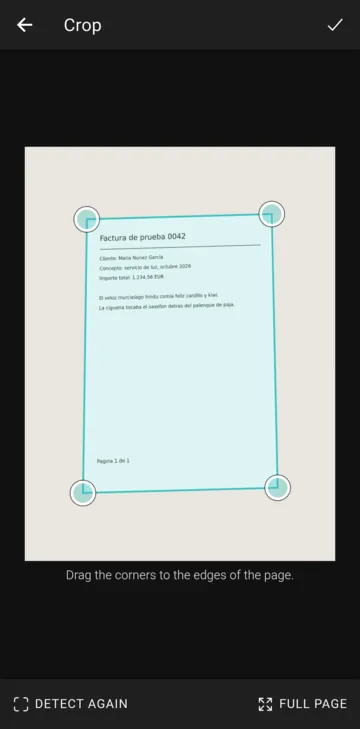
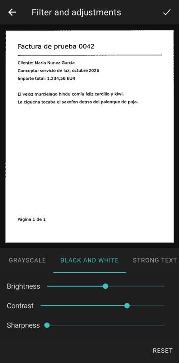
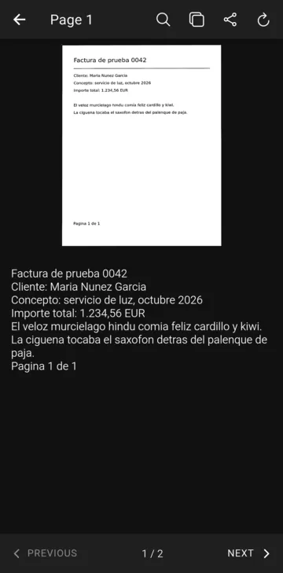
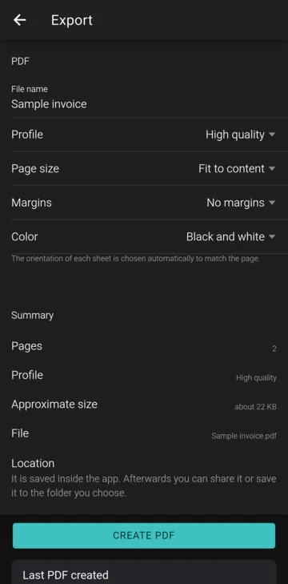

Android application · Technical demonstration
ScanForge
Offline document scanning, OCR and PDF generation for Android
A complete Android application that turns the phone camera into a document scanner. It detects the page, corrects its perspective, applies document filters, recognizes the text and builds multi-page PDF files. All image processing, OCR and PDF generation run on the device; the app does not request Internet access.
Version 1.1.0 · 74 MB · Android 7.0 or later · No account required
SHA-256: f1f2e92f93cb0e55b5e640c0f4e0cfb4f6b13207ae97bd91738973c494a570ba

Technical capabilities
What the application implements, and the technology behind each part.
-
Camera capture with live edge detection
Native camera screen built with CameraX. Each preview frame is analyzed with OpenCV to outline the page and to warn about low light, motion or blur.
-
Perspective correction and filters
OpenCV contour detection, perspective warp and document filters (adaptive threshold, local contrast enhancement, background normalization). The original photo is never overwritten.
-
On-device OCR
Google ML Kit text recognition with the Latin model bundled in the APK. Detects rotated pages, stores word-level bounding boxes and keeps manual corrections separate from recognized text.
-
Multi-page PDF generation
A purpose-built streaming PDF writer in Kotlin: one page at a time, JPEG or 1-bit images, A4, Letter or fit-to-page, with three quality profiles.
-
Local storage and search
SQLite database with versioned migrations for documents, pages, OCR results, folders and tags. Search by name, recognized text, tag or date.
-
Privacy by design
The only permission is the camera. Images are imported with the Android photo picker and exported with the system file picker, so no storage permission is requested.
Application screenshots
Captured from the application running on an Android 15 phone, using a sample document. Select a screenshot to enlarge it.
-

Document list -

Multi-page document -

Crop editor -

Document filters -

OCR result -

PDF export


How to test the application
The application is distributed as an APK file for evaluation. Android asks for an extra confirmation when installing apps from outside an app store; no other security setting needs to be changed.
- Download the APK On an Android phone, open this page and tap Download Android APK (74 MB).
- Open the file Open the downloaded file from the browser or the file manager.
- Allow the installation Android asks you to allow that browser or file manager to install apps. You can revoke this afterwards in the system settings.
- Launch ScanForge The camera permission is requested the first time you scan.
Requires Android 7.0 or later on an ARM device (arm64-v8a or armeabi-v7a, which covers most phones and tablets). The application works entirely offline: no Internet connection, account or backend is needed. The only hardware used is the rear camera, and it is optional: images can also be imported from the gallery.
Suggested demonstration
Scan a printed document, correct its perspective, extract its text and export a PDF.
- Optionally, turn on airplane mode to confirm that everything runs offline.
- Tap New scan and photograph a printed page lying on a contrasting surface; watch the live outline.
- Capture one or two pages and tap Done. Each page is cropped and straightened automatically.
- Open a page's menu and choose Crop to adjust the corners, then Filter and adjustments to try the black and white filter.
- Tap a page thumbnail to see the recognized text; search for a word or correct it.
- Use the share button of the document to create a PDF, then share it or save it to a folder.
Technical architecture
A hybrid application: the interface is a web application packaged with Capacitor, and the image, OCR and PDF work runs in a native Kotlin plugin.
Interface
↓ Capacitor 8 bridge · only file paths and parameters cross it, never image data ↓
Native Android (Kotlin)
↓
Device
Technical notes
- Version
- 1.1.0 (version code 2)
- Package
com.scanforge.app- Minimum Android
- Android 7.0 (API level 24); built for API level 36
- Architectures
- arm64-v8a and armeabi-v7a, in a single APK
- Internet
- Not required. The app does not request the Internet permission.
- Hardware
- Rear camera, optional (gallery import works without it)
- Permissions
- Camera only
- Interface language
- English, or Spanish when the phone is set to Spanish
- APK size
- 74,026,089 bytes (74 MB)
- APK SHA-256
- f1f2e92f93cb0e55b5e640c0f4e0cfb4f6b13207ae97bd91738973c494a570ba
- Signing certificate SHA-256
- 34:5A:AE:4A:B5:FA:F1:D5:26:46:20:A6:C5:13:B2:88:8E:F0:BC:49:3B:5F:18:A6:73:CE:43:36:A5:69:95:9B
Limitations
- Edge detection can miss the page when paper and background have similar colors, with strong shadows or crumpled paper; the corners can then be adjusted by hand.
- OCR covers printed text in the Latin alphabet; handwriting is not recognized reliably.
- PDF files contain one image per page; the text is exported separately and is not searchable inside the PDF.
- Documents are stored only on the device and are not included in cloud backups.
- The application has been tested on one phone model (Android 15).
This build is provided for technical evaluation. It has not undergone an independent security audit. It is signed with the developer's release key; the SHA-256 values above let you check that the downloaded file is the original.